NEW
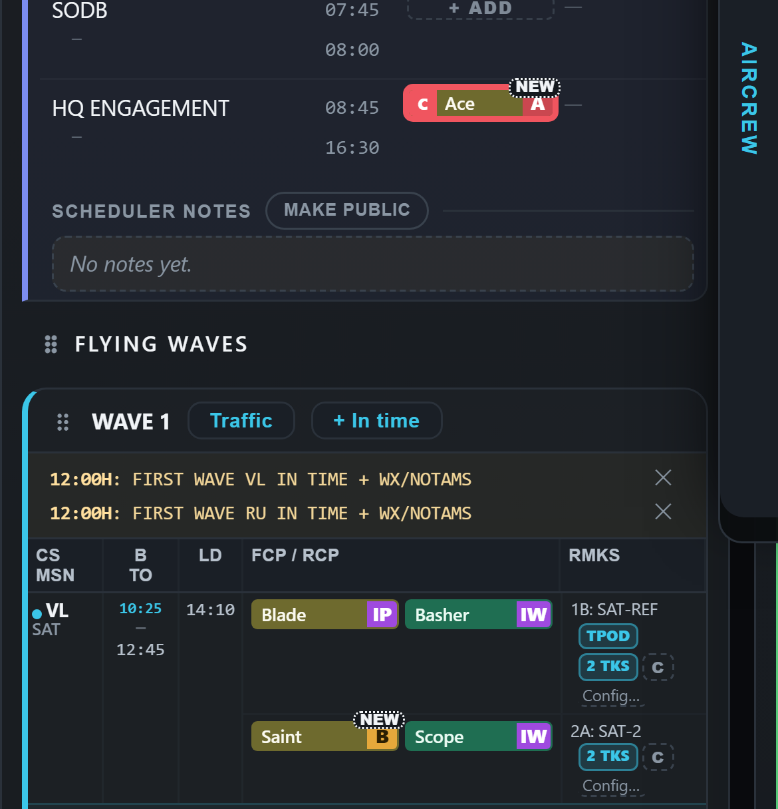
three letters like AL1; says "new to you" — the same word as the "4 new" count (recommended)
Drawn on the real app. Desktop above, phone below in each box.
Four options in place of "ORIG", each in the plain white dotted outline (never gold or amber — amber means a warning).

three letters like AL1; says "new to you" — the same word as the "4 new" count (recommended)
"goes out with the Original" — the Original counted as amendment nought, next to AL1, AL2 …
the smallest; says only "changed"
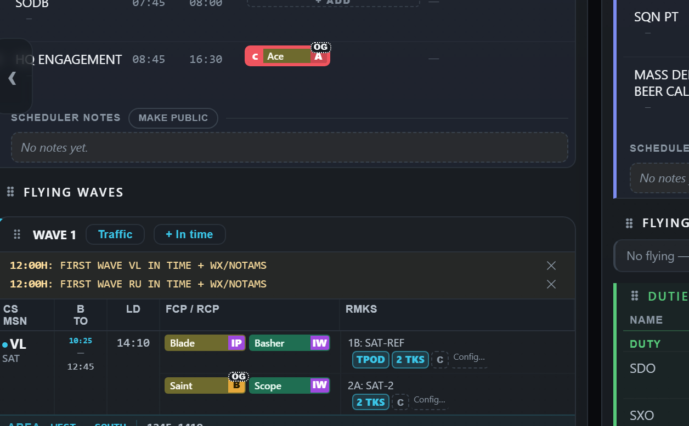
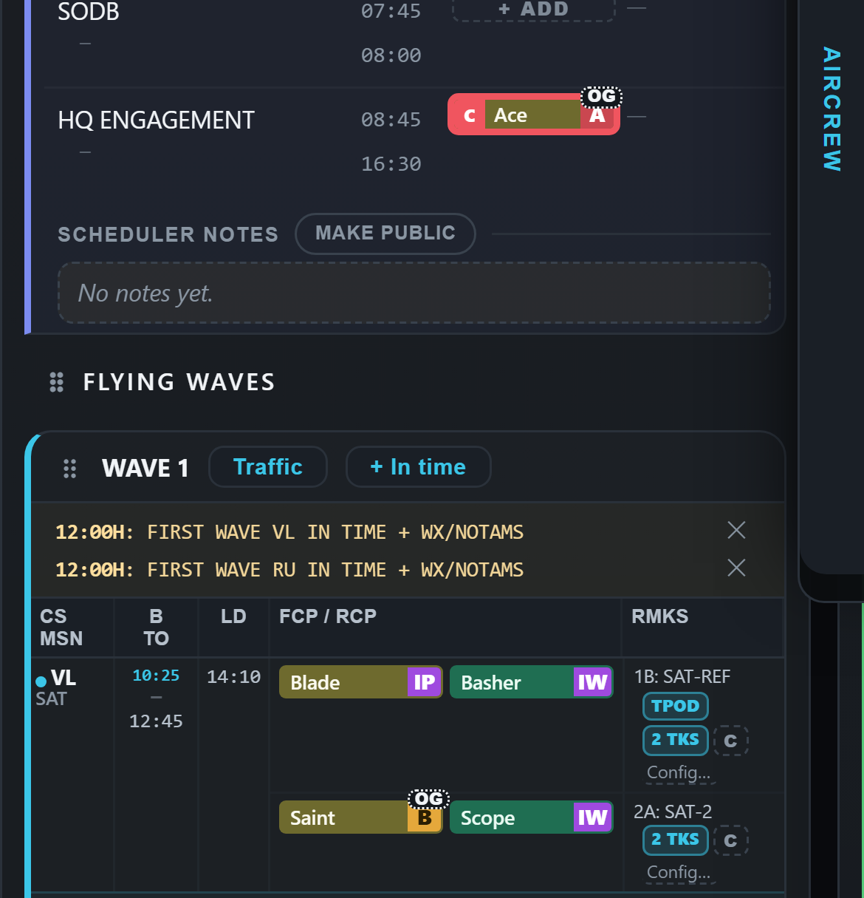
short, but cryptic
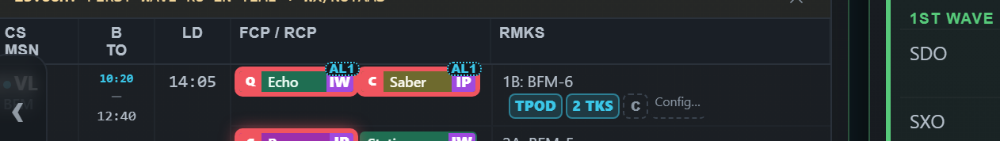
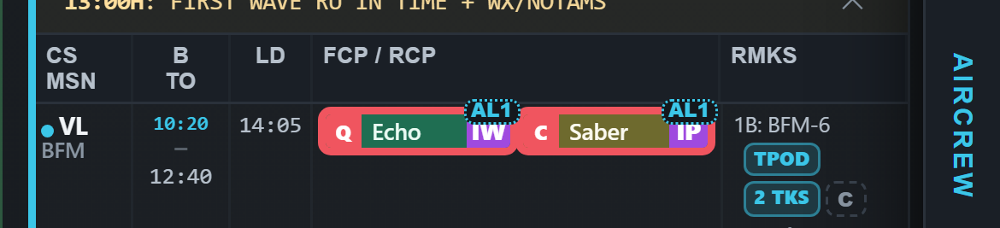
Today only ORIG carries the tick. Two ways to give every AL the same tick: (a) keep the solid AL colour and add the ORIG seal's white tick disc; (b) use the ORIG seal's own form — a faint wash, an outline and a tick disc — in the AL's colour. The "Signed" line under the heading follows the same choice.
Today


(a) solid colour + white tick
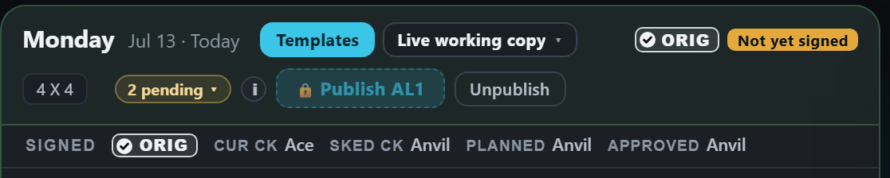

(b) the ORIG seal's form, in the AL colour

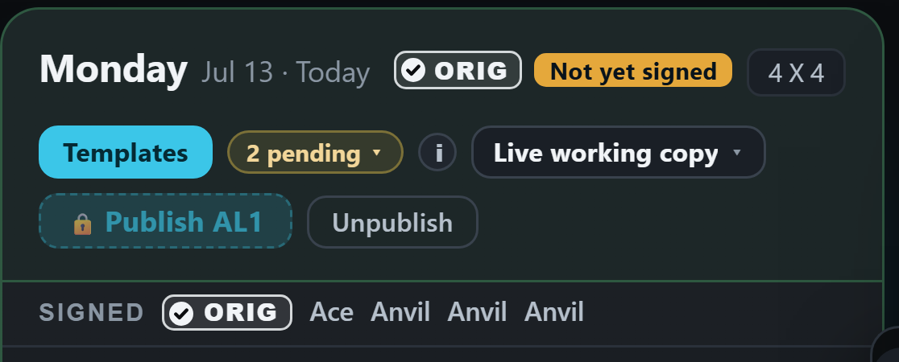
Today
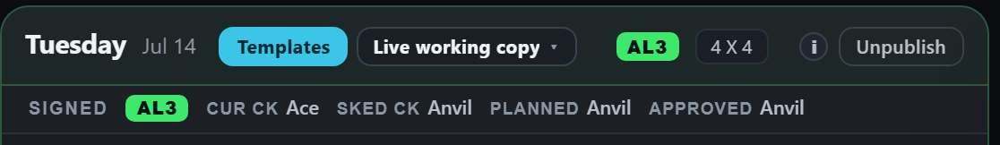
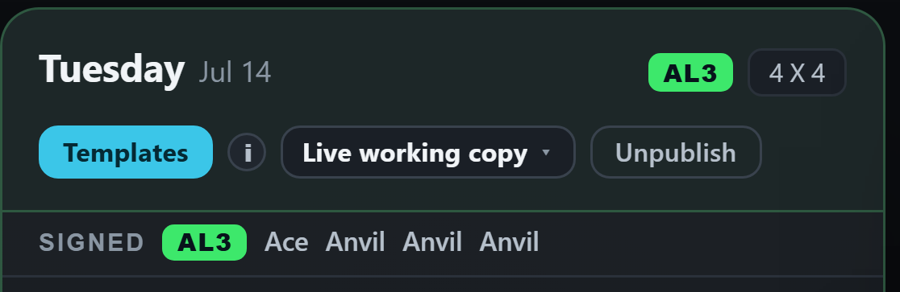
(a) solid colour + white tick
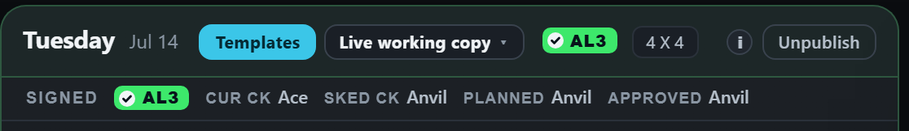
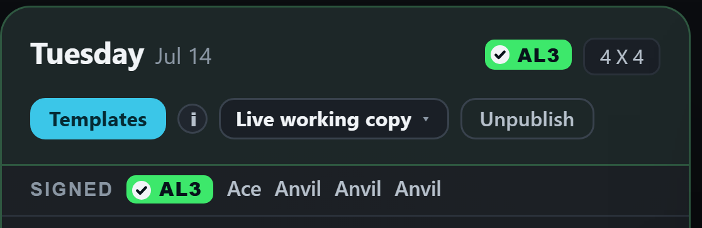
(b) the ORIG seal's form, in the AL colour
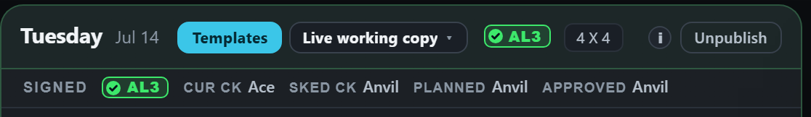
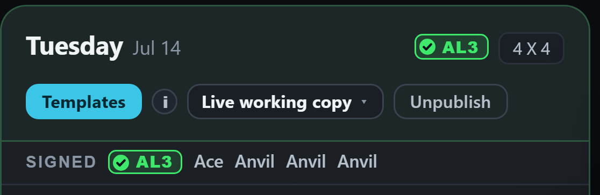
Today
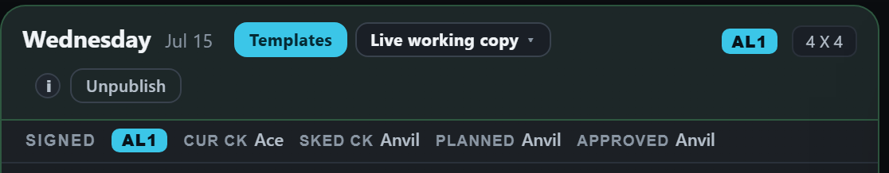
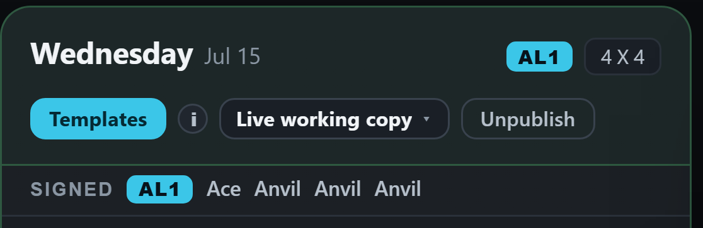
(a) solid colour + white tick
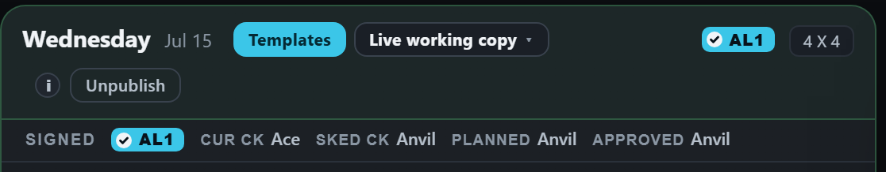
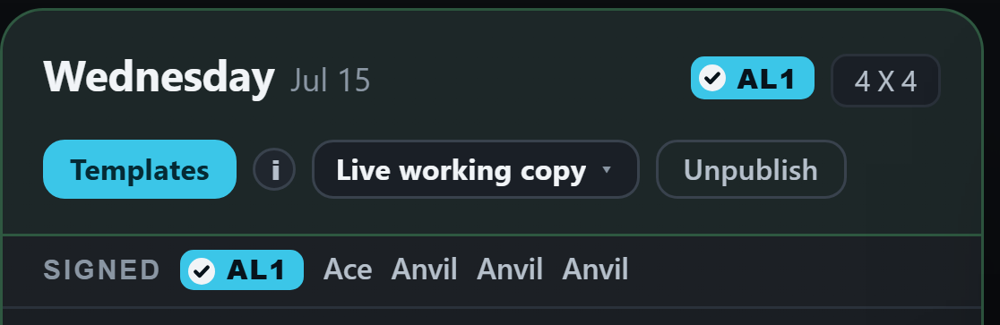
(b) the ORIG seal's form, in the AL colour
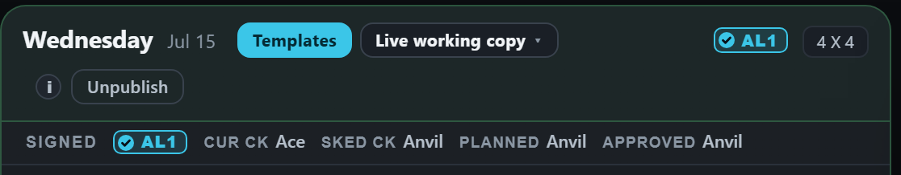
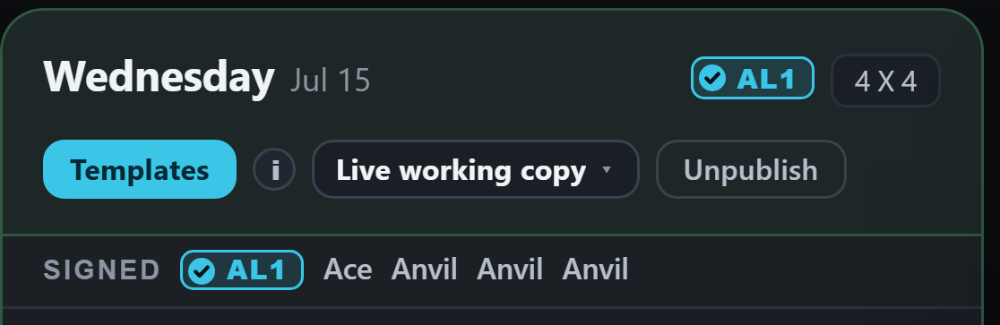